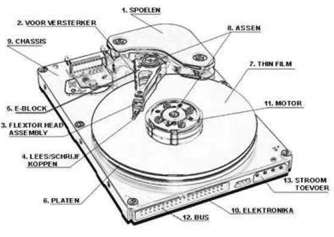
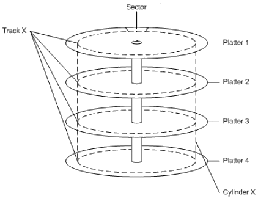

Een mechanische harde schijf bestaat uit een aantal onderdelen. De belangrijkste daarvan zijn de platters en de lees/schrijfkoppen of heads die bevestigd zijn op de arm.
Een platter is een aluminium schijf met een magneet coating. Tegenwoordig is de diameter van deze platters zo’n 3 tot 12cm. Een lees/schrijfkop (head) met een inductiespoel zweeft vlak boven het oppervlak van de platter en rust op een luchtkussen.
Wanneer een positieve of negatieve stroom door de kop loopt, magnetiseert deze het oppervlak vlak onder de kop. Wanneer de kop over een gemagnetiseerd gebied gaat, wordt in de kop een positieve of negatieve spanning geïnduceerd. Op die manier kunnen bits worden weggeschreven of uitgelezen.

De reeks bits die geschreven wordt wanneer de platter, zonder dat de arm beweegt, een omwenteling maakt noemen we een track. Elk van de tracks is verdeeld in een aantal sectoren.
Een sector heeft een vaste lengte van meestal 512 byte. In de sectoren wordt de data opgeslagen. Een verzameling van sectoren noemen we een cluster. Een bestand bestaat meestal uit verschillende sectoren en clusters. Het bestandssysteem houdt bij uit welke sectoren een bestand bestaat en waar deze precies terug te vinden zijn op de harde schijf.
Na de data komt er een error correcting code of ECC die meerdere bitfouten in een sector kan corrigeren.

De meeste schijfstations bevatten een aantal platters die verticaal gestapeld zijn zoals je in bovenstaande figuur kan zien.
Elke kant heeft zijn eigen arm en kop. Alle armen zijn met elkaar verbonden zodat ze altijd tegelijkertijd bewegen.
De verzameling tracks die bij een bepaalde positie van de armen hoort, noemen we een cilinder. De huidige harde schijven hebben meestal 6 tot 12 platters wat dus zorgt voor 12 tot 24 opnamevlakken.
De snelheid van de mechanische harde schijf wordt beperkt door fysieke limieten. De voornaamste zijn de snelheid waarmee de arm kan bewegen en de snelheid waarmee de platters draaien.
De meeste mechanische harde schijven draaien hun platters aan een snelheid van 5400 of 7200 toeren per minuut. Mechanische harde schijven die in een server gebruikt worden halen tot 15000 toeren per minuut.
De seek time is de tijd die de arm erover doet om op de plaats te komen waar het bestand fysiek op de harde schijf staat. De gemiddelde seek time is zo’n 9ms. De arm wordt, door deze kleine seek time, blootgesteld aan duizelingwekkende G krachten.
Als we de seek time als de horizontale (links naar rechts naar links) vertraging beschouwen, dan is de rotational latency de verticale vertraging. Als een harde schijf aan 7200 toeren per minuut draait, betekent dit dat er per 8 ms één omwenteling wordt gemaakt. Gemiddeld betekent dit dat we na 4ms op de juiste plaats zitten op de harde schijf.
De access time is de som van de seek time en rotational latency. Dit is de tijd die de harde schijf er gemiddeld over doet om op de juiste plaats terecht te komen voor een lees of schrijf operatie. In de praktijk is de access time zo'n 13 ms.